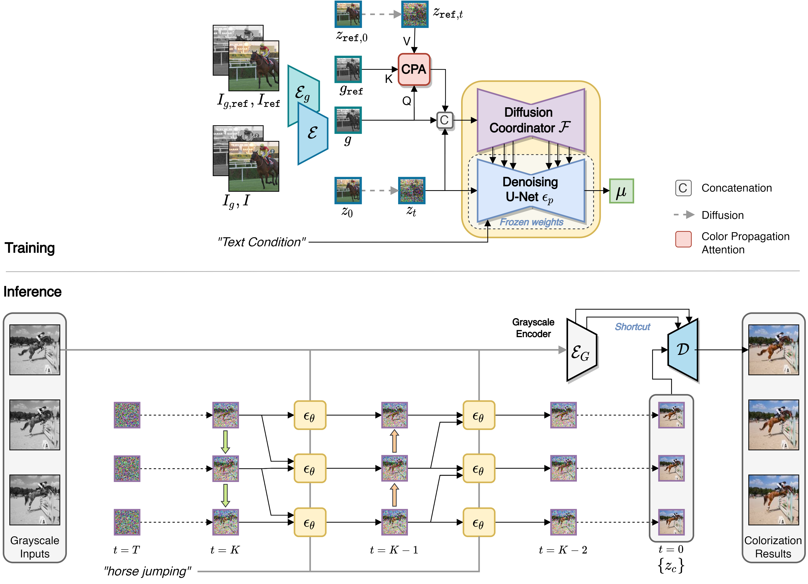

Video colorization is a challenging task that involves inferring plausible and temporally consistent colors for grayscale frames. In this paper, we present ColorDiffuser, an adaptation of a pre-trained text-to-image latent diffusion model for video colorization. With the proposed adapter-based approach, we repropose the pre-trained text-to-image model to accept input grayscale video frames, with the optional text description, for video colorization. To enhance the temporal coherence and maintain the vividness of colorization across frames, we propose two novel techniques: the Color Propagation Attention and Alternated Sampling Strategy. Color Propagation Attention enables the model to refine its colorization decision based on a reference latent frame, while Alternated Sampling Strategy captures spatiotemporal dependencies by using the next and previous adjacent latent frames alternatively as reference during the generative diffusion sampling steps. This encourages bidirectional color information propagation between adjacent video frames, leading to improved color consistency across frames. We conduct extensive experiments on benchmark datasets, and the results demonstrate the effectiveness of our proposed framework. The evaluations show that ColorDiffuser achieves state-of-the-art performance in video colorization, surpassing existing methods in terms of color fidelity, temporal consistency, and visual quality.
